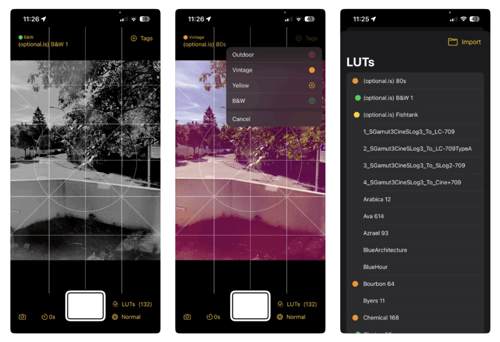

We’ve been working on a 3rd experimental camera app call LUT Cam to go along with Ornithoto and DejaView. This is a bring your own filter style camera. In the past we’ve experimented with adding real-time filters over video feeds. We love B&W camera apps that edit your photos or camera apps with loads of filters. The problem for us is that either you can’t preview the filters in real-time or we like 2 filters from here, and 3 from somewhere else. That lead us to experiment with a camera app shell that we can continue to improve, while letting you load your favorite filters.

The industry standard for color grading are LUT files. We decided to build a camera app that loads any LUT cube file so you can manage the filters you want.
But LUTs are not the end-all-be-all for filters. We’ve also experimented with real-time video shaders and while their portability is limited, they can do things LUTs can’t. We wanted to go through some of the pros and cons of each.
LUT Cubes
LUT stands for Look-Up Table. This allows you to look-up the value of any R, G, B value and convert it to a new value. This is a look-up that’s been pre-computed.
A sample .cube file looks like:
0.1546 0.0000 0.0595
0.1885 0.0000 0.0569
0.2176 0.0000 0.0546
Each column corresponds to the R, G, B values. Our sample file has 42,875 lines of RGB triplets.
In swift, we load this file and parse the lines to fetch the three columns of values. After that, we load the image and values in to the built-in Cube filter. Some sample Swift code would look like:
let filter = CIFilter(name: "CIColorCube")!
filter.setValue(CIImage(cgImage: source_image), forKey: kCIInputImageKey)
filter.setValue(lut.data, forKey: "inputCubeData")
filter.setValue(lut.dimension, forKey: "inputCubeDimension")
let outputImage = filter.outputImage!
This applies the LUT transform values to the image using the CIColorCube. The transformations are fast enough to run at 30 fps on 4K video (on a new-ish iPhone).
Keeping all the data in a .cube file allows for portability. They can be save and transferred between devices, shared with others and sent to customers. A cube files doesn’t record what actions were taken to arrive at these values (for instance exposure, white balance, color correction, hue/vibrance), but the final transformations are preserved.
Exporting a LUT
In various photo and video editing tools, you take export your color corrections as a LUT file. This allows you to make your own LUT .cube files. This allows you to take your edits as a LUT into another app and speed-up your workflows or previews. Video apps like DaVinci Resolve can also import and export LUT files. This makes them an ideal interchange format for camera filters.
Sadly, there isn’t a portable standard for shaders in the same way as LUTs and after a bit of digging, we’ll see why.
Shaders
A shader is another tool to transform a pixel/image. Technically, a ColorCube transform is a shader being applied to each pixel in an image, but we have many more possibilities when we are looking at each pixel independently with a shader. For instance, a LUT is not aware of the other channels. You cannot do a channel swap and put the Red value in the Green channel and the Green value back to the Red channel. That’s something you could easily do with a shader. An example shader in c takes a pixel with the four channels and allows you to alternate them in any way you want and return a new color value.
float4 LCPurple(sample_t s) {
float4 swappedColor;
swappedColor.r = s.r;
swappedColor.g = s.b;
swappedColor.b = s.g ;
swappedColor.a = s.a;
return swappedColor;
}
In this example, we get a pixel with an RGBA value and we swap the G and B channels and return the new pixel color. The function can be much more complicated. In this example we put all RGB values into a greyscale equation and put that new value in all three channels.
float4 GreyY(sample_t s) {
float4 swappedColor;
float y = (0.299 * s.r + 0.587 * s.g + 0.114 * s.b);
swappedColor.r = y;
swappedColor.g = y;
swappedColor.b = y;
swappedColor.a = s.a;
return swappedColor;
}
The calculations are done in realtime as opposed to a pre-computed LUT file. Some shaders can even be globally aware of all the colors in an image or take additional parameters into the function, like min/max brightness/darkness values to scale the RGB values. This gives shaders a much more powerful way to transform the colors than a LUT, but it the lacks portability.
LUT Camera
You can download the LUT Camera now for free. We’ll eventually put a small price on it once we’ve worked out all the bugs. Using portable LUT files and filters has been an itch we’ve wanted to scratch for a while. We have yet another internal camera app built around shaders. For us to add a new shader is a lot of work and the app is old and clunky and not written in SwiftUI, etc. etc. Making an app where we can load in any LUT file we find online and easily create more using other photo editing tools speeds-up the workflow and experimenting immensely. We’re reminded of the quote:
Perfection is the enemy of good. —Voltaire
Sometimes a great LUT now is better than never making that perfect shader. Most people are taking party-pics and want some fun filters. They’re not color grading a multi-million dollar feature film. With that in mind, finding free (or creating) LUTs and loading them into your own camera app hits that sweat spot. Not everything will be a master piece, but that’s ok.